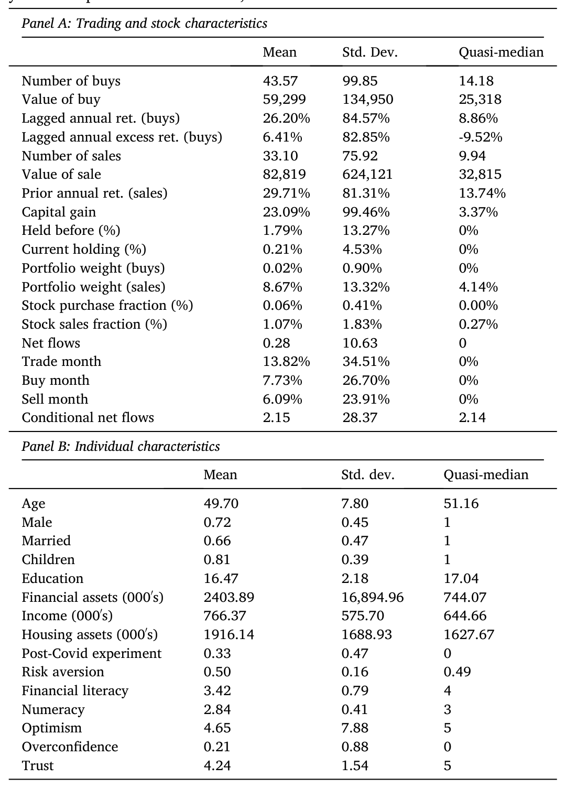
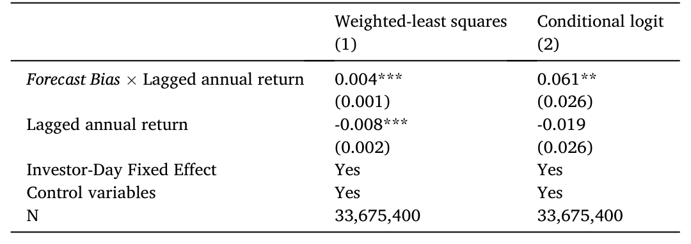
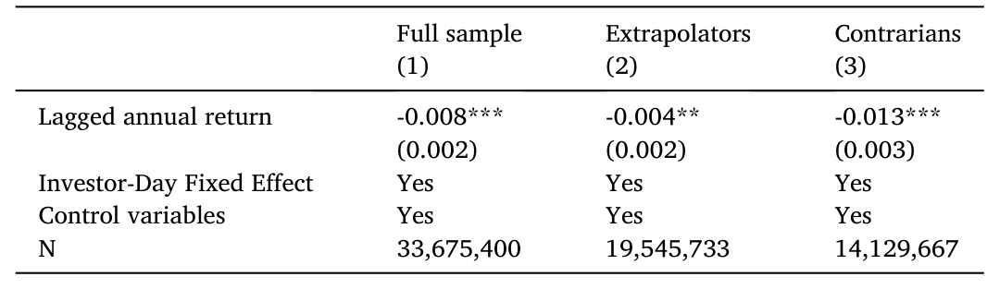
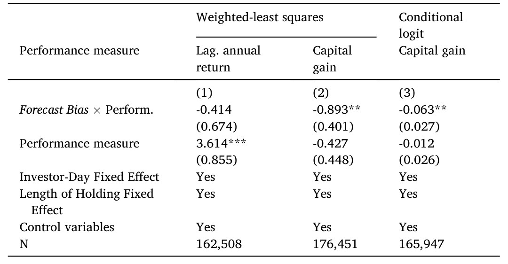
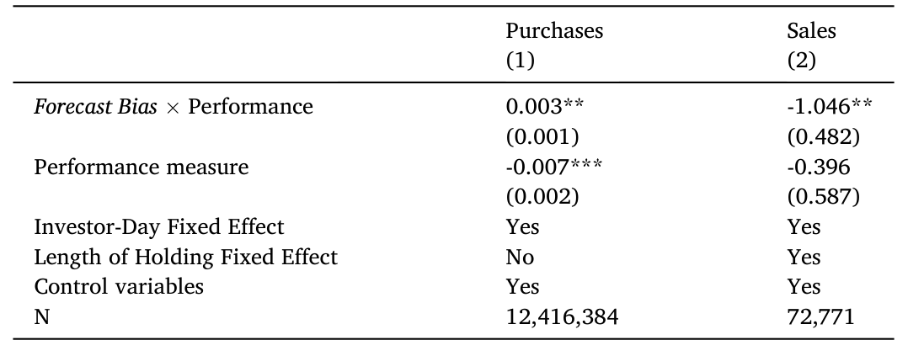
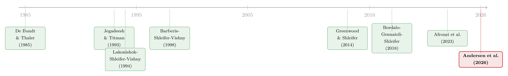

外推者与逆向者：一把在实验室里量出来的尺子，丈量真实世界的买卖
本文细读 Andersen, Dimmock, Nielsen, and Peijnenburg (2026, Journal of Financial Economics)。他们做了一件以往文献想做却很难做到的事：先把投资者请进实验室，用一个标准化的预测任务量出每个人的「预测偏误」(forecast bias)——一个单一的参数 b_i，区分外推者 (extrapolator) 和逆向者 (contrarian)；再把这个实验室里的参数，接到这些人在真实世界里长达 11 年的全部股票交易记录上。结论很干净：同一个偏误参数，同时解释了「买什么」「卖什么」「资金何时流入股市」三件看似无关的事。外推者倾向于买过去涨得多的股票、卖账面亏损的股票、在市场刚涨过之后加仓；逆向者则处处相反。
1 引言：同样的历史，两种相反的解读
先设想一个再普通不过的场景。两位投资者，盯着同一只股票、同一段过去一年涨了 30% 的走势。第一个人心想：「势头这么好，还会继续涨」，于是买入；第二个人心想：「涨这么多了，该回调了」，于是按兵不动、甚至卖出。同样的历史数据，喂给两个人，却得到两种完全相反的交易决策。
这个分歧从哪里来？过去二十年的预期 (expectations) 文献已经反复告诉我们：投资者对市场未来收益的预期，强烈地受到近期历史收益的影响——涨过之后人们更乐观，跌过之后人们更悲观（Greenwood and Shleifer, 2014）。但同样这批文献也一再强调一件事：这种「被历史牵着走」的程度，在投资者之间差异巨大。有人是彻头彻尾的外推者，有人却是逆向者，还有一大批人介于两者之间。
问题在于，过去的研究几乎都停在了「资产类别」(asset class) 这个粗颗粒度上：它们问的是「你对整个股市的预期如何影响你配多少钱进股票」。可真实的投资决策远不止于此——你不是只决定「买不买股票」，你还要决定「在成百上千只股票里，具体买哪一只、卖哪一只」。偏误的预期，到底如何渗透进这种证券层面的选择 (security selection)？ 这正是本文要回答的核心问题，也是它与既有文献最关键的分野。
始终抓住这一个核心来读这篇论文：「预测偏误」是一把可以被独立测量的尺子，作者要证明的，是这把尺子能同时刻画三种不同的交易行为。 全文的所有设计、所有回归、所有稳健性检验，都是在为这一句话服务。
2 把投资者请进实验室：偏误是如何被「量」出来的
要把这个故事讲圆，作者首先得解决一个老大难问题：怎么测一个人的预测偏误，而且测得干净？
以往用调查 (survey) 测预期，有个根本性的麻烦：你问出来的预期，既可能反映一个人「掌握的信息不同」，也可能反映他「处理信息的方式不同」。两者纠缠在一起，分不开。比如某人对某只股票格外乐观，你无法判断他是知道了别人不知道的利好（信息差异），还是单纯地对历史走势反应过度（处理方式的差异）。而本文真正想要的，恰恰是后者——一个剥离了信息差异、纯粹刻画「信息处理方式」的参数。
于是作者把人请进实验室。实验设计紧紧跟随 Afrouzi et al. (2023)：让每位受试者观察一个数值序列的历史，再预测它的未来。关键在于，这个序列背后的数据生成过程 (data-generating process) 是作者亲手设定、完全已知的一个一阶自回归 (AR(1)) 过程，初值设为 100：
$$ x_{t+1} = 100 + 0.5 \cdot (x_t - 100) + \varepsilon_t $$
其中自回归系数固定为 0.5，均值为 100，误差项 \(\varepsilon_t\) 服从标准差为 25 的正态分布。受试者先看到 40 个历史实现值，然后预测下一期（以及下两期）的取值；看到新实现值后再预测，如此循环 40 轮。959 名受试者平均花 9 分 47 秒完成全部预测，平均每分钟四次——只有 27 人用了不到 5 分钟，8 人用了超过 20 分钟。为保证激励相容，作者借鉴 Hossain and Okui (2013)，让预测精度去影响「中奖概率」而非「奖金数额」：某次被抽中的预测，其中奖概率为 \(100 - 5 \times |\text{forecast}_{i,t} - \text{realization}_{i,t}|\)，奖金固定为 2000 丹麦克朗（约 €260），最终有 17 人拿到了奖金。
这里有一个常被忽略、却极其要紧的设计动机：正因为真实的数据生成过程已知，作者才能「干净地」给每个人的预测误差贴上『偏误』的标签。 在真实股市里你做不到这一点——股票的真实生成过程没人知道，到底是「动量」还是「反转」才对，本身就是悬案，所以你永远分不清一个人是「理性地利用了动量」还是「非理性地外推」。实验室把这层不确定性彻底抹掉了。
接着，一个自然的问题是：怎么把 40 轮预测压缩成一个数字？作者沿用 Afrouzi et al. (2023)，对每个受试者跑一条回归：
$$ F_{i,t}\!\left(x_{i,t+1}\right) - E_{i,t}\!\left(x_{i,t+1}\right) = a_i + b_i \cdot \left(x_{i,t} - \bar{x}\right) + \varepsilon_{i,t} $$
等式左边 \(F_{i,t}(x_{i,t+1}) - E_{i,t}(x_{i,t+1})\) 是受试者 \(i\) 的预测 \(F\) 减去「理性预测」\(E\)（后者由已知的真实过程算出），也就是他的预测误差；右边核心是斜率 \(b_i\)，它度量的正是预测偏误。这条回归值得我们把它拆开看清楚，因为本文后面所有的故事，都是从这个 \(b_i\) 长出来的：
直觉很清楚：\(b_i > 0\) 意味着你会把当前偏离均值的状态放大地外推到未来——这就是外推者；\(b_i < 0\) 意味着你会反着预测——这就是逆向者。实验结果与既有实验文献（如 Dominitz and Manski, 2011; Afrouzi et al., 2023）一致：平均而言，受试者是外推者（高实现值后预测系统性偏高），但横截面差异极大，相当一批人是逆向者，还有许多人接近零偏误。值得一提的是，由于样本小，AR(1) 持续性参数的 OLS 估计本身有偏，作者引用 Kendall 近似指出这会让 \(b_i\) 低估外推倾向（在 \(\vartheta = 0.5\)、40 次预测下偏差约 0.06）；但由于这个偏差对所有人一致，不影响依赖横截面差异的检验。作者还构造了一系列替代度量——Forecast Bias Residual（调整个体特异的持续性与方差）、Forecast Bias Limited Information、Forecast Bias Rank（百分位排名，抗离群值），以及对应特定预期模型的 Diagnostic / Sticky / Extrapolative / Adaptive Expectations——用于后续稳健性检验。

Table 1: Summary statistics.
3 识别策略：投资者—日固定效应这一步，才是真正关键的一招
有了实验室里的 Forecast Bias，下一步是把它接到真实交易上。作者用上了来自丹麦统计局 (Statistics Denmark) 的行政登记数据 (administrative register data)：覆盖 2011–2021 共 11 年、包含每一位丹麦投资者（自然也包括实验受试者）的全部交易、收入、财富与人口学信息。这份数据「完整且精确」，没有自报偏差，是个人金融研究里少有的奢侈品。
但真正决定这篇论文成败的，不是数据有多好，而是回归怎么设。这里作者走了一步很漂亮的棋。
朴素的做法是：把每个人买的股票的「过去收益」对他的 Forecast Bias 做回归。可这样一来，遗漏变量 (omitted variable) 立刻就成了致命伤——偏误高的人可能同时更年轻、更有钱、更爱冒险、过往经历不同……这些都可能既和偏误相关、又和买什么股票相关。
作者的解法是：只看一个人真正发生交易的那些「投资者—日」，在每个投资者—日内部，构造出他当天「本可以合理交易」的那一篮子股票，然后用『这只股票的过去表现』与『投资者的 Forecast Bias』的交互项，去解释他实际买了哪一只——并加入投资者—日固定效应 (investor-day fixed effects)。
这一招的精妙在于：投资者—日固定效应会把当天的市场整体表现、以及所有时变和时不变的个人/组合特征（过往经历、风险偏好、财富效应等）的直接影响统统吸收掉。剩下能被识别出来的，只有交互项——也就是「同一个人、同一天、面对一篮子股票时，他的偏误如何改变了『某只股票相对其他股票的过去表现』对他选择的影响」。换句话说，作者比较的不是「外推者和逆向者这两个人有什么不同」，而是「同一个决策时点上，偏误如何调制了过去收益的吸引力」。
当然，固定效应只吸收了个人特征的直接效应，并没有吸收它们与过去表现的交互效应。作者对此心知肚明，所以在稳健性里专门加入了「投资者特征 × 过去表现」的交互项，并用 Oster (2019) 基于系数稳定性的方法评估遗漏变量——结论是遗漏因素不太可能驱动核心系数。我们在『我的评述』里再回到这一点。
4 三个结果，一个机制：买、卖、与资金流
铺垫到这里，故事终于可以揭晓了。作者的论证策略是：用同一个 Forecast Bias，去打三个不同的靶子，如果三枪都中，那这个机制的「统一性」就立住了。
第一枪，买入。 结果如理论（Barberis et al., 2015, 2018）所预测：偏误与所买股票的过去收益正相关——外推者买过去涨得多的，逆向者买过去跌得多的。量级上，Forecast Bias 提高一个标准差，意味着所买股票的过去一年收益高出 3.0 个百分点。

Table 2: Forecast bias and stock purchases.

Table 3: Past performance and stock purchases for extrapolators and contrarians.
第二枪，卖出。 这里出现了一个微妙而漂亮的反转。如果机制只是「偏误作用于过去收益」，那卖出端应该和买入端对称地由过去收益驱动。但数据说：不是的。对卖出决策而言，Forecast Bias 与所卖股票的资本利得 (capital gains) 显著负相关，而与过去一年收益无关。具体地，Forecast Bias 提高一个标准差，会使「卖出一只资本利得高出一个标准差的股票」的概率，相对基准概率下降 6.1 个百分点。

Table 4: Forecast bias and stock sales.
这个反转才是本文真正深刻的地方。它说明：对不同类型的决策，最「显著」(salient) 的那个历史业绩指标是不一样的——买入时，人们盯着股票本身的过去收益；卖出时，人们盯着自己账户里的盈亏（资本利得，这正是处置效应 disposition effect 的舞台）。而 Forecast Bias 是那个统一的「翻译器」：它决定了无论哪个显著指标摆在你面前，你是把它外推、还是逆向解读。
第三枪，资金流。 在证券选择之外，作者还检验了净流入 (net flows)。结论同样成立：偏误更高的投资者，会在过去一年市场收益更高之后、相对偏误更低的投资者更多地增配股票。于是「过去市场收益 → 净流入」这条 Greenwood and Shleifer (2014) 式的关系，其投资者间的异质性，也被 Forecast Bias 解释了。

Table 6: Forecast bias and trading post-experiment.
三枪三中。过去股票收益→买入、资本利得→卖出、过去市场收益→净流入，三组「显著业绩指标 → 对应决策」的映射，被同一个实验室参数串了起来。最后，作者还用全体丹麦投资者样本做了一个外部效度 (external validity) 检验：那些买入高过去表现股票的人，也倾向于卖出低过去表现的股票——买卖两端在投资者内部是一致的，这与「偏误是一个共同机制」的图景完全吻合。
5 文献脉络：从「市场会过度反应吗」到「谁在过度反应」
把这篇论文放回它生长的土壤里，会看得更清楚。这条研究线，本质上是关于一个老问题的不断细化：市场（以及投资者）会系统性地误判未来吗？如果会，是谁、以何种方式？
最早的火种，是 De Bondt and Thaler (1985) 关于股市过度反应、以及由此带来的长期反转 (long-term reversal) 的发现；几乎同时，Jegadeesh and Titman (1993) 又记录了短期动量 (momentum)。这一「短期动量、长期反转」的张力，催生了第一批用「投资者偏误」来解释横截面收益的理论模型——Lakonishok, Shleifer, and Vishny (1994) 的逆向投资与外推，Barberis, Shleifer, and Vishny (1998) 的投资者情绪模型，以及 Hong and Stein (1999) 的统一理论。它们的共同假设是：投资者的预测是有偏的。

但这些早期工作大多是「从收益反推偏误」——假设投资者有某种偏误，看能否拟合出我们观察到的收益模式。真正的转折，是预期文献开始直接去测量投资者的预期：Greenwood and Shleifer (2014) 用调查数据扎实地证明了预期被过去收益牵着走；Bordalo, Gennaioli, and Shleifer (2018) 的诊断性预期 (diagnostic expectations) 给了这种过度反应一个严谨的理论刻画；而 Afrouzi et al. (2023) 则把战场搬进实验室，用一个干净的预测任务把「过度反应」量化成可比的参数。
本文 (Andersen et al., 2026) 恰好站在这条线的最新一环：它借来了 Afrouzi et al. (2023) 的实验工具，却把它指向了一个全新的、此前无人触及的靶子——个股层面的买卖选择。与它最近的邻居，是 Laudenbach et al. (2024)（信念如何在 COVID 崩盘中影响入市资金流）、Beutel and Weber (2023)（用信息实验证明信念影响风险资产配置）、以及 Liu et al. (2022)（把外推信念与买入的过去收益相关联，但把择时和选股混在了一起）。本文相对它们的增量，是第一次把「实验室测得的偏误」与「个股买、卖、净流入」三类决策同时、干净地连了起来。
顺带一提，本文虽不直接研究资产定价，但它为资产定价里「基于偏误」的那一大类模型提供了直接的微观证据支持——你可以把它看成是给「贴现率/预期之争」补上的一块实证拼图（关于预期与贴现率在资产定价中的中心地位，可参见《贴现率：资产定价的中心议题》）。
6 我的评述：贡献、隐忧，与我想看到的下一步
先说贡献。这篇论文最让我欣赏的，是它的「一鱼三吃」——用一个在实验室里干净测出的标量参数，同时解释买、卖、净流三种异质性。这种「一个机制统一多个现象」的论证，比任何单一相关性都更有说服力，因为遗漏变量要想假冒这个结果，必须同时解释三件事：Forecast Bias 与买卖过去表现之间的单调关系，以及它与预测误差之间的 U 形关系（两端——极端外推者和极端逆向者——都偏离理性，所以像「认知能力」这类单调的解释很难站住）。这是一个设计得相当聪明的「反遗漏变量」论证。把实验室的内部效度和行政数据的外部效度缝在一起，方法论上也很优雅。
再说对识别的隐忧。第一，也是最根本的，是外推性 (extrapolation) 假设：本文测的是人们在一个 AR(1)=0.5 的抽象数值过程上的偏误，却用它来解释真实股票（一个生成过程未知、且动量与反转并存的复杂对象）上的交易。作者引用 Landier et al. (2019) 和 Frydman and Nave (2017) 论证「偏误的跨情境排序是稳定的」，这缓解了担忧，但终究是个假设，而非在本数据里被检验的事实；若排序不稳，只会削弱检验功效、使结论偏保守，这一点作者也坦承。第二，固定效应吸收的是个人特征的直接效应，交互效应仍需手工控制；作者做了，但「投资者特征 × 过去表现」的控制集是否穷尽，永远无法证伪。第三，样本是丹麦的实验受试者池，虽具代表性，但规模与文化特异性是否影响外推到其他市场，仍需更多复制。
最后，我想看到的下一步。其一，我很想知道这个 Forecast Bias 是否可预测真实收益——外推者买入的高过去收益股票，事后表现如何？如果外推者系统性跑输、逆向者系统性跑赢，那这篇论文就从「行为相关性」升级成了「偏误导致财富损失」的福利论证。其二，把这个机制搬到公司债/信用市场会非常有意思：信用利差的动量与反转结构与股票不同，「过去利差变化」与「持有期资本利得」哪个更显著，可能给出和股票截然不同的映射。其三，机构投资者——尤其是外资持有人——是否也带着可测的 Forecast Bias？若能把这套实验接到基金经理身上，对理解资金的跨境流动与市场流动性会有直接价值。
7 评论与延伸（Q&A + 研究方向）
7.1 几个可能的疑问
Q：外推者买高过去收益的股票，这难道不就是「动量交易」吗？为什么要叫它「偏误」？
关键区别在于「偏误」是在实验室里、对一个已知生成过程被独立测出来的，不是从交易行为反推的。在 AR(1)=0.5 的过程里，对极端历史做强外推在规范意义上确实偏离了理性预测——这是可以被「贴标签」的。至于在真实股市里追涨是否「错」，作者明确不表态：因为股票真实过程未知，动量（Jegadeesh and Titman, 1993）和长期反转（De Bondt and Thaler, 1985）都真实存在，谁对谁错本身是悬案。本文采取的是「实证（positive）立场」——只记录相关性，不评判最优策略。
Q：买入看「过去收益」、卖出看「资本利得」，这个不对称会不会只是数据噪音？
不太像。两个量级都不小且方向清晰：买入端 1 个标准差偏误对应过去一年收益高
3.0个百分点；卖出端 1 个标准差偏误对应卖出高资本利得股票的概率下降6.1个百分点，而过去一年收益在卖出端不显著。这个「在买入端显著、卖出端消失」的切换，恰恰呼应了既有文献——买入决策与股票过去收益相关（Barber and Odean, 2008），卖出决策与投资者自己的资本利得相关（Odean, 1998; Ben-David and Hirshleifer, 2012），是处置效应的领地。两个指标各管一摊，本身就是结果的一部分，而非噪音。
Q：会不会是「聪明 vs 不聪明」在驱动一切——偏误只是认知能力的代理变量？
作者专门堵了这个口子。
Forecast Bias与预测误差之间是 U 形关系：极端外推者和极端逆向者两端都偏离理性，中间接近零偏误的人误差最小。而认知能力是单调的（越聪明误差越小）。一个单调的遗漏变量无法同时制造「U 形的误差关系」和「单调的买卖关系」，所以认知能力解释很难成立。
Q：实验室里对一个抽象数列的偏误，凭什么外推到真实的股票交易？
这是本文最大的「信仰飞跃」，作者用两篇文献来支撑：Landier et al. (2019) 表明，同一随机过程无论被贴上「稳定随机过程」还是「GDP/CPI/股票收益」的标签，测出的偏误几乎一样；Frydman and Nave (2017) 用同一批人证明，在股市实验里外推的人，在知觉任务里也外推——暗示存在一个共同的信息处理机制。这把「跨情境稳定性」从假设变成了有证据支撑的假设，但仍不是在本数据里直接验证的。
Q：实验只有约一千人，行政数据却号称覆盖全丹麦，样本到底多大、够不够？
偏误的测量来自
959名受试者的实验。检验的统计力量并不来自人数，而来自「投资者—日 × 可交易股票篮子」这个层面的海量观测——每个受试者在 11 年里产生大量交易日，每个交易日又对应一篮子候选股票。此外，作者用全体丹麦投资者样本做买卖一致性的外部效度检验，那里的样本就是全国级别的了。
Q：会不会是反向因果——是交易经历塑造了实验室里的偏误，而非偏误驱动交易？
作者用一个简单而有力的检验回应：只取受试者参加实验之后发生的交易，结果依然成立。既然偏误是在实验当天测的，而它能预测之后的交易，反向因果的解释就很难站住。
7.2 几个可能的研究问题与提案
-
偏误的「价格」：外推者真的为追涨付费了吗？
- 经济故事：本文只记录了「外推者买高过去收益股票」，但没说这是否亏钱。如果能追踪外推者买入后的持有期收益，并与逆向者对比，就能把「行为相关」升级为「财富后果」——这正是行为金融最想要的福利论证。机制上，若外推者系统性买在动量的尾部、逆向者抄在反转的底部，二者的长期业绩应当分化。
- 可行性：高。所需数据本文已具备（实验偏误 + 全样本持仓与价格），只需加一层事后收益核算和组合层面的业绩归因，识别上沿用现有的投资者—日框架即可。
-
把尺子接到信用市场：债券上的外推与逆向。
- 经济故事：股票的「过去收益」和债券的「过去利差变化」在时间序列结构上很不一样——信用利差有更强的均值回复。同一个
Forecast Bias，作用在债券上，「过去利差」与「持有期资本利得」哪个更显著、映射出怎样的买卖模式，可能与股票截然不同，从而检验机制的可迁移性。 - 可行性：中。需要把实验受试者匹配到其债券/债基持仓（北欧行政数据原则上可行），但散户直接持债较少，可能要退而用债券基金流入作为代理，识别会稍弱。
- 经济故事：股票的「过去收益」和债券的「过去利差变化」在时间序列结构上很不一样——信用利差有更强的均值回复。同一个
-
外资持有人是否带着可测的偏误？
- 经济故事：跨境资金流的「热钱」特征常被归因于外推式追涨。若能在机构/外资经理身上测出
Forecast Bias，就能把宏观层面的资金流异质性，还原到微观的信息处理偏误上，并连接到市场流动性。 - 可行性：低到中。把基金经理请进实验室测偏误几乎不现实；更可行的替代是从经理的历史调仓「反演」一个外推参数，但这就回到了「从行为反推偏误」的老路，丧失了本文实验室测量的核心优势，识别诚实地说会打折扣。
- 经济故事：跨境资金流的「热钱」特征常被归因于外推式追涨。若能在机构/外资经理身上测出
-
偏误的稳定性与可塑性：经历会改写你的尺子吗？
- 经济故事：Malmendier and Nagel (2011) 表明宏观经历（如「大萧条婴儿」）会持久改变风险偏好。一个自然的问题是：
Forecast Bias是天生的人格特质，还是会被市场暴跌等经历重塑？若能在不同年份对同一批人重测偏误，就能区分「特质」与「状态」。 - 可行性：中。技术上要求对同一受试者池做面板式重复实验，成本与样本流失是主要障碍；丹麦的长期行政基础设施使追踪可行，但重复实验的组织难度不低。
- 经济故事：Malmendier and Nagel (2011) 表明宏观经历（如「大萧条婴儿」）会持久改变风险偏好。一个自然的问题是：
参考文献
- Afrouzi, H., Kwon, S.Y., Landier, A., Ma, Y., Thesmar, D. (2023). Overreaction in expectations: Evidence and theory. Quarterly Journal of Economics 138(3), 1713–1764.
- Barber, B.M., Odean, T. (2008). All that glitters: The effect of attention and news on the buying behavior of individual and institutional investors. Review of Financial Studies 21(2), 785–818.
- Barberis, N., Shleifer, A., Vishny, R. (1998). A model of investor sentiment. Journal of Financial Economics 49(3), 307–343.
- Ben-David, I., Hirshleifer, D. (2012). Are investors really reluctant to realize their losses? Trading responses to past returns and the disposition effect. Review of Financial Studies 25(8), 2485–2532.
- Beutel, J., Weber, M. (2023). Beliefs and portfolios: Causal evidence. University of Chicago. Working paper.
- Bordalo, P., Gennaioli, N., Shleifer, A. (2018). Diagnostic expectations and credit cycles. Journal of Finance 73(1), 199–227.
- De Bondt, W.F.M., Thaler, R. (1985). Does the stock market overreact? Journal of Finance 40(3), 793–805.
- Dominitz, J., Manski, C.F. (2011). Measuring and interpreting expectations of equity returns. Journal of Applied Econometrics 26(3), 352–370.
- Frydman, C., Nave, G. (2017). Extrapolative beliefs in perceptual and economic decisions: Evidence of a common mechanism. Management Science 63(7), 2340–2352.
- Greenwood, R., Shleifer, A. (2014). Expectations of returns and expected returns. Review of Financial Studies 27(3), 714–746.
- Hong, H., Stein, J.C. (1999). A unified theory of underreaction, momentum trading, and overreaction in asset markets. Journal of Finance 54(6), 2143–2184.
- Hossain, T., Okui, R. (2013). The binarized scoring rule. Review of Economic Studies 80(3), 984–1001.
- Jegadeesh, N., Titman, S. (1993). Returns to buying winners and selling losers: Implications for stock market efficiency. Journal of Finance 48(1), 65–91.
- Lakonishok, J., Shleifer, A., Vishny, R. (1994). Contrarian investment, extrapolation, and risk. Journal of Finance 49(5), 1541–1578.
- Landier, A., Ma, Y., Thesmar, D. (2019). Biases in expectations: Experimental evidence. HEC Paris. Working paper.
- Laudenbach, C., Weber, A., Weber, R., Wohlfart, J. (2024). Beliefs about the stock market and investment choices: Evidence from a field experiment. Review of Financial Studies, forthcoming.
- Liu, H., Peng, C., Xiong, W.A., Xiong, W. (2022). Taming the bias zoo. Journal of Financial Economics 143(2), 716–741.
- Malmendier, U., Nagel, S. (2011). Depression babies: Do macroeconomic experiences affect risk taking? Quarterly Journal of Economics 126(1), 373–416.
- Odean, T. (1998). Are investors reluctant to realize their losses? Journal of Finance 53(5), 1775–1798.
- Oster, E. (2019). Unobservable selection and coefficient stability: Theory and evidence. Journal of Business & Economic Statistics 37(2), 187–204.